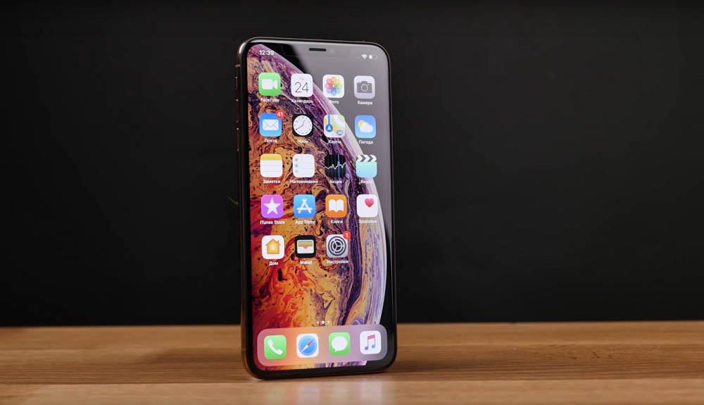
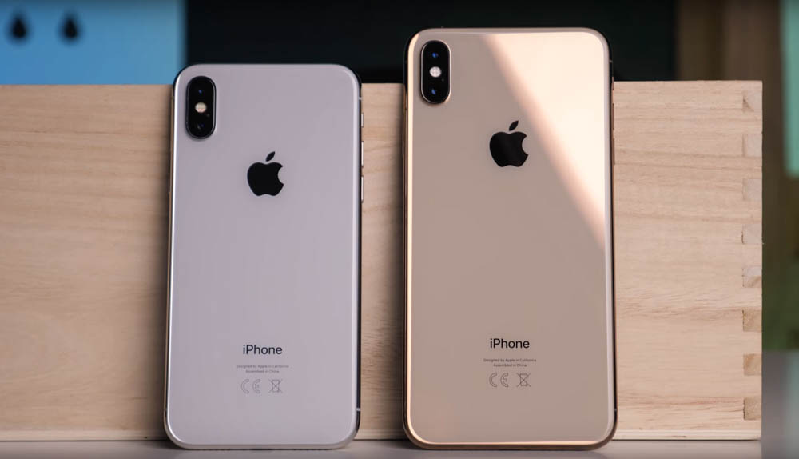
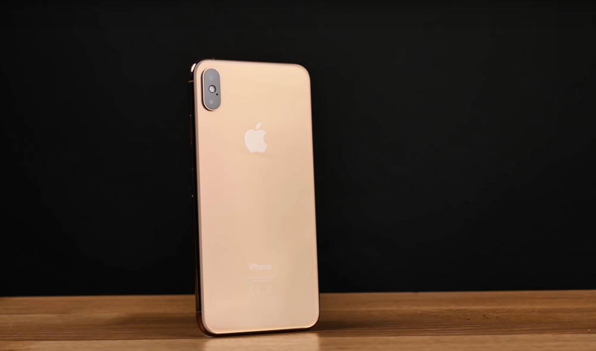
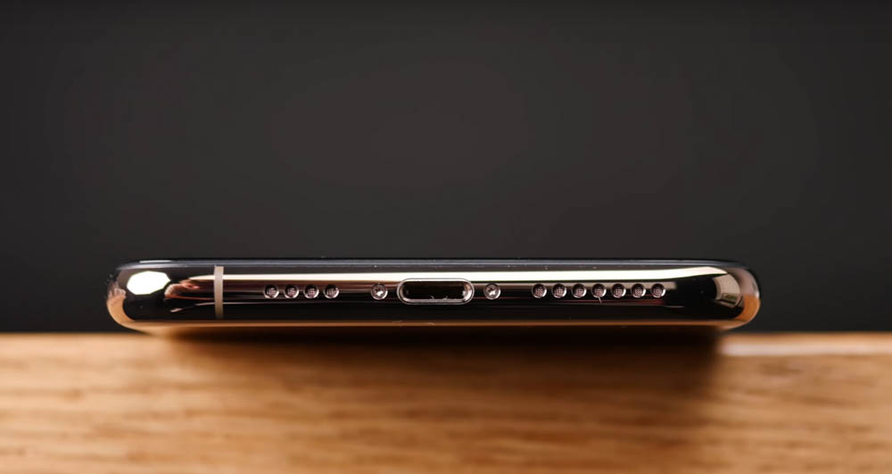
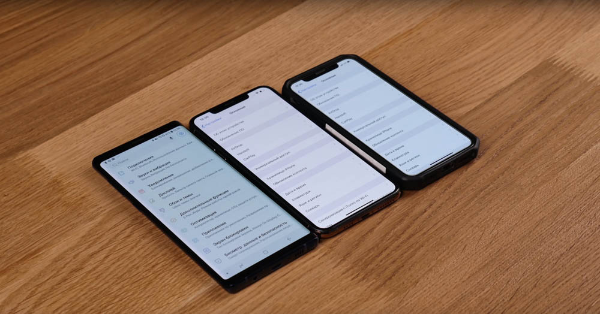
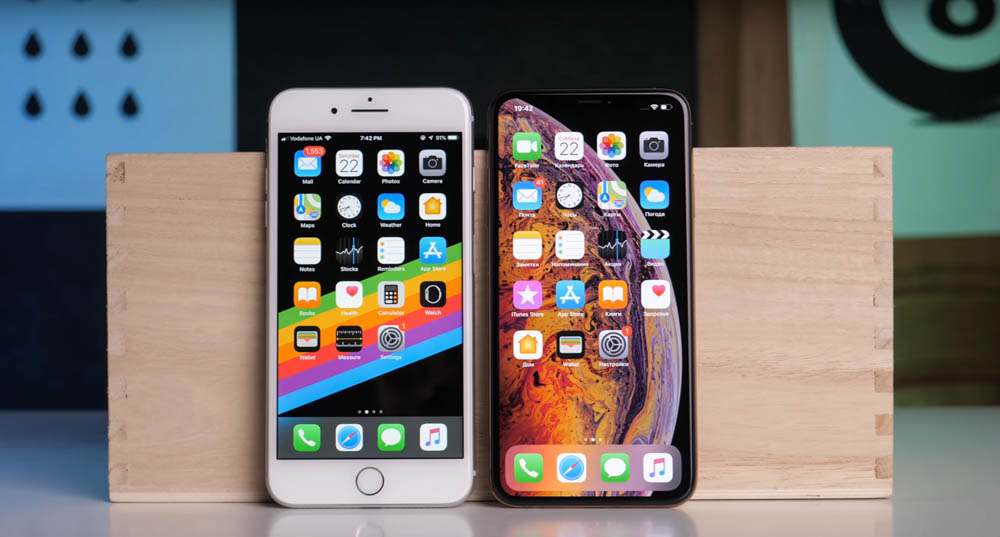
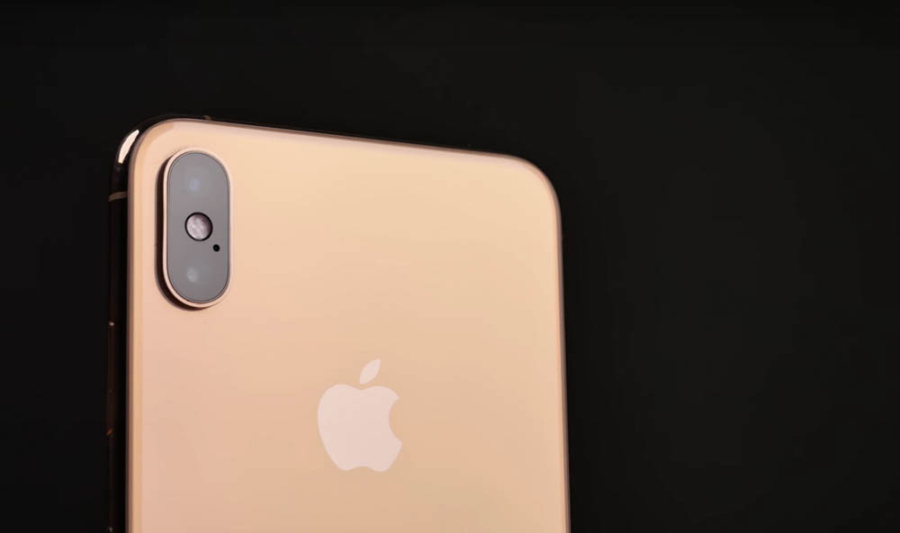
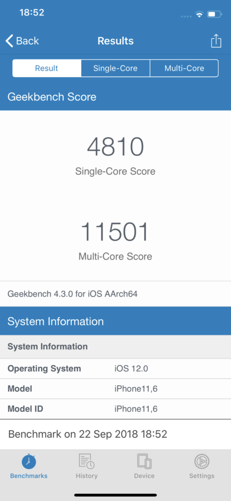

Технические характеристики iPhone Xs Max
- Размеры: 157.5 x 77.4 x 7.7 мм.
- Вес: 208 г.
- Операционная система: iOS 12.
- Процессор: Apple A12 Bionic (шесть ядер).
- Дисплей: OLED, 6,5″1242 x 2688, 458 PPI.
- Память: 64/256/512 ГБ.
- ОЗУ: 4 ГБ.
- Камера: основная – 12 МП, f1,8, запись видео 4K60/Full HD/HD, 1080p до 240 к/с, вторая основная – 12 МП, 56мм, f2,4 фронтальная – 7 МП, запись видео в Full HD.
- Беспроводные технологии: Wi-Fi (2.4Gh/5Gh) 802.11 b/g/n/ac, Bluetooth 5, NFC.
- Интерфейсные разъемы: Lightning.
- Аккумулятор: несъемный Li-Pol аккумулятор 3174 мА•ч.
После презентации iPhone X в прошлом году было очевидно и понятно, что дальнейшее развитие подразумевает выпуск большой модели, которая могла бы называться Plus или Pro, по аналогии с большими айфонами прошлых годов либо по аналогии с про-версиями айпедов. Но Apple пошла немного дальше и добавила третью приставку к двум существующим – Max. Это звучит как-то немного странно и, насколько я понял, пояснений, почему так, нет. Ну да ладно, пусть будет макс.
Это привычное нам обновление в рамках 2-годичного цикла, которое имеет приставку S. Причем главной фишкой этого обновления стала большая модель, потому что других серьезных инноваций нет. Улучшения есть, но чего-то уровня Siri в 4s, Touch ID в 5s тут нет. Должен сказать, что Max-версия не выглядит и не ощущается слишком огромной, даже когда смартфоны стоят рядом. Разница очевидна, но не внушительна. А вот впечатления от большего экрана есть, но об этом позже.

Из внешних приятных отличий – новый цвет. Я не люблю золото, но выглядит стильно и свежо, хотя насыщенность больше напоминает бронзу.
А из неприятных – асимметрия снизу. Раньше количество дырочек было одинаковым по обе стороны от Lightning-разъема, а теперь из-за смещенной антенны такой красоты больше нет. Выглядит не очень, я люблю симметрию, но не скажу, что крайне критично. Просто не идеально, как и у многих других.
Дисплей
Как я говорил выше, дисплей – главное изменение в iPhone в этом году. В Max версии диагональ экрана составляет 6,5″, разрешение — 1242 x 2688 точек, плотность пикселей — 458 PPI. Выполнен он по технологии OLED, есть поддержка HDR видео. В сравнении с iPhone X и Samsung Galaxy Note9 экран стал ярче и с более теплым белым цветом, который выглядит еще естественнее.

Картинка в целом отличная, а из-за того, что челка не изменилась в размерах, она занимает намного меньше места на дисплее в процентах. Из-за этого и видео смотреть приятнее, и в игры играть.
Но главное – это одинаковые рамки со всех сторон, благодаря чему смартфон меньше конкурентов со схожими диагоналями экранов. К примеру, Galaxy Note9 больше, несмотря на меньший экран. А если сравнить с iPhone 8 Plus, у которого диагональ дисплея на дюйм меньше, становится вообще смешно, потому что новинка компактнее. Справедливости ради замечу, что соотношение сторон ранее было 16:9, поэтому по ширине экраны практически идентичны.
Динамики, IP68
Немного про менее заметные изменения. Стереодинамики стали звучать громче. Но я не называю это преимуществом, потому что на максимальной громкости плотности звука не добавилось и, по факту, он превращается в шипение. Причем перегрузов нет, просто физику не обманешь: для более объемного звука необходимы большие размеры акустических раковин. Также смартфон теперь защищен по стандарту IP68 от попадания влаги внутрь. Его можно погружать на глубину до двух метров на 30 минут, причем Apple говорят, что теперь и соленая вода не страшна. Однако тестировать это не стоит, потому что гарантия на повреждения водой не распространяется.
Камеры
Камеры немного улучшили, причем изменения коснулись как фото-, так и видеосъемки. Разрешение осталось прежним: основные сенсоры (ширик и телевик) по 12 МП, фронтальная камера – 7 МП. А вот матрица у основной камеры стала больше, теперь размер отдельного пикселя равен 1,4 мкм. Также изменилось фокусное расстояние, теперь у основной камеры это эквивалент 26 мм, в то время, как ранее было 28 мм.
Появился режим Smart HDR, который по умолчанию включается, когда это необходимо. На самом деле очень схожая работа с Auto HDR, который был ранее, но там он не срабатывал практически никогда в автоматическом режиме, нужно было принудительно включать его. А вот более широкий динамический диапазон – это самое главное изменение в камере, для меня. Я вскоре сделаю небольшое сравнение камер старого iPhone и Galaxy Note9, там отлично видно, как новый iPhone намного лучше справляется со сложными сценами и днем, и вечером.
Видеосъемка по параметрам осталась точно такой же, однако появилась запись стереозвука. Давно пора было.
Производительность и автономность
Внутри iPhone Xs и Xs Max установлено одинаковое железо: шестиядерный процессор Apple A12 Bionic, графика Apple GPU, 4 ГБ ОЗУ и от 64 до 512 ГБ ПЗУ. В жизни прирост скорости, скажу как есть, не ощущается. iPhone X и 8 все еще очень быстрые, а вот в бенчмарках разница есть.
Емкость аккумулятора – 3174 мАч, и этого для iPhone достаточно, чтобы по первым тестам быть автономнее Galaxy Note9. Однако мы вскоре проведем свое тестирование на канале Checkedd, чтобы понимать, насколько он лучше конкурентов.
Стоимость
Да, стоят новые iPhone много. Но я в который раз повторяю: вас никто лично не оскорбил, вы всегда можете не купить этот или любой другой смартфон. У Apple философия простая: “Мы делаем самые лучшие смартфоны, еще и недорого. Вам не обязательно платить все сразу, вы можете платить 30 долларов в месяц, а это 1 доллар в день за смартфон, стоимостью 1000 долларов”. И тут не поспоришь, более того, народ у нас такой: с одной стороны, ноют, что Apple (и другие компании) ничего не делают на нашем рынке, нас нет в первой и второй волне продаж, нет магазина, а с другой стороны — жалуются, что дорого. Вот поэтому Apple и не представлены тут, потому что наша платежеспособность – это не их проблемы. Цены можно посмотреть на сайте Apple, но я лишь скажу, что в Европе максимальная стоимость составит около 2к долларов.
В целом, мне обновление понравилось. Оно не революционное, но очень логичное. Улучшили практически все, включая автономность и камеру, при этом выпускать совершенно новую модель явно рано, загнуть шлейф экрана назад никто до сих пор не смог. И понятно, что Apple сегодня не является безоговорочным лидером инноваций: в этом смартфоне нет сканера отпечатков под дисплеем, камера всего лишь одна из лучших и так далее. Но вряд ли это повлияет на продажи, потому что смартфон все еще очень хорош. Обновляться с iPhone X стоит только на большую модель: обычный Xs отличается минимально. А вот iPhone 8 и более ранние модели можно и продавать потихоньку.